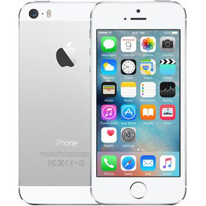

Sau bao tháng ngày mong chờ, cả thế giới Công nghệ đã được đón nhận sự ra đời của siêu phẩm điện thoại thông minh iPhone 5s,
một trong những chiếc điện thoại được mong mỏi nhất năm 2012. Với những cải tiến mạnh mẽ cả về mặt thiết kế lẫn phần cứng,
nên ngay từ khi lên kệ, iPhone 5s liên tục cháy hàng.
iPhone 5s hứa hẹn sẽ tiếp tục khẳng định vị trí dẫn đầu trên thị trường Smartphone hiện nay.
Thiết kế mới nguyên khối mỏng nhất trong các siêu phẩm của Apple
Ngay từ buổi lễ ra mắt, các nhà thiết kế của Apple đã khẳng định đây là chiếc điện thoại mỏng nhất mà họ từng làm, iPhone 5s sở hữu những thông số về kích thước thật đáng kinh ngạc, máy mỏng chỉ 7.6 mm và trọng lượng chưa tới 112g,
nếu đem ra so sánh với các smartphone hiện nay thì iPhone 5s thực sự là một trong những chiếc điện thoại mỏng nhất, nhẹ nhất.

Thông số kỹ thuật
Màn hình: LED-backlit IPS LCD, 4", DVGA
Camera sau: 8 MP
Camera trước: 1.2 MP
CPU: Apple A6 2 nhân
RAM: 1 GB
Bộ nhớ trong: 16 GB
Thẻ SIM: 1 Nano SIM, Hỗ trợ 4G
Dung lượng pin: 1440 mAh